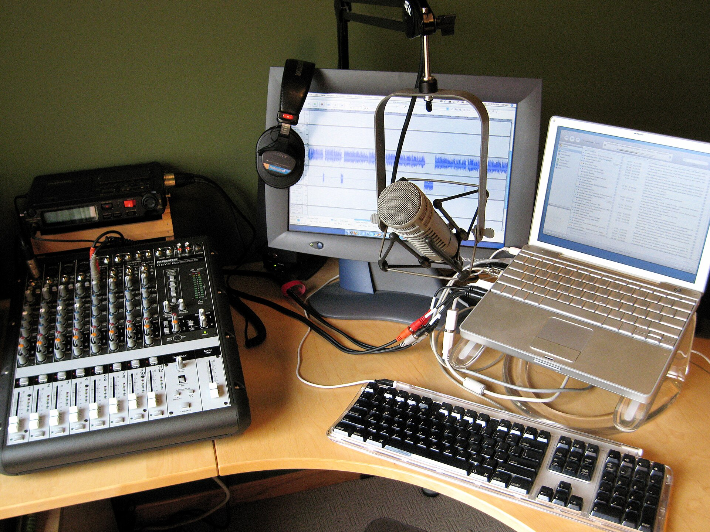

your channel, on a timeline.
Cutsway edits gaming videos, streams, shorts and podcasts for creators. Scroll to play the sequence.
Book a callCutsway edits gaming videos, streams, shorts and podcasts for creators. Scroll to play the sequence.
Book a callHours of gameplay become the twelve minutes people finish. Story, pacing, captions, sound.
48h
Eight hours live turns into a highlight video and the shorts chat would clip themselves.
48h
Ten vertical clips per session, reframed by a person and captioned word by word.
24hThree mics, two cameras, one clean episode, six clips.
72h
Three options per video, checked at feed size before you see them.
8hTitles, captions and a schedule on YouTube, TikTok, Instagram and X.
daily
That is a gaming video sent this minute. Sample turnaround, confirmed on your call.
Book a call
Everything raw. Picking is our job.
On the exact frame, in the review link. Two rounds per edit.
Your editor starts from your last ten uploads and stays with you.
Yes, on a schedule set to when your audience is awake.